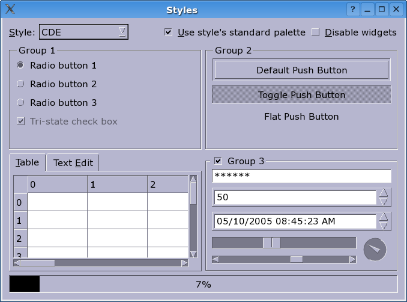

QCDEStyle ¶
Detailed Description ¶
The PySide.QtGui.QCDEStyle class provides a CDE look and feel.
This style provides a slightly improved Motif look similar to some versions of the Common Desktop Environment (CDE). The main differences are thinner frames and more modern radio buttons and checkboxes. Together with a dark background and a bright text/foreground color, the style looks quite attractive (at least for Motif fans).
Note that most of the functions provided by PySide.QtGui.QCDEStyle are reimplementations of PySide.QtGui.QStyle functions; see PySide.QtGui.QStyle for their documentation. PySide.QtGui.QCDEStyle provides overloads for PySide.QtGui.QCDEStyle.drawControl() and PySide.QtGui.QCDEStyle.drawPrimitive() which are documented here.
See also
QWindowsXPStyle QMacStyle PySide.QtGui.QWindowsStyle PySide.QtGui.QPlastiqueStyle PySide.QtGui.QMotifStyle
- class PySide.QtGui. QCDEStyle ( [ useHighlightCols=false ] ) ¶
-
Parameters: useHighlightCols – PySide.QtCore.bool Constructs a PySide.QtGui.QCDEStyle .
If useHighlightCols is false (the default), then the style will polish the application’s color palette to emulate the Motif way of highlighting, which is a simple inversion between the base and the text color.